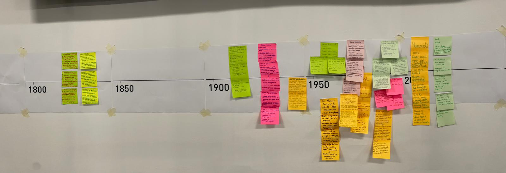

In 1911, the Computing-Tabulating-Recording Company (CTR) was established through a merger, spearheaded by Charles Ranlett Flint, to integrate Herman Hollerith’s punch-card technology (IBM, 2026). The machines used electromechanical sensors to automatically "read" punched card holes, thereby facilitating significant innovation in data processing. Its significance cannot be overstated since it established the commercialized field, thereby creating a template for the development of global enterprise software (IBM, 2026). Its effect on work is significant, given that it enabled automation in clerk work, thereby serving to transform labor from bookkeeping to information management, which is evident in IBM's current efforts to leverage AI in creating cognitive systems

Figure 1: Timeline of digital advancements (Author, 2026).
The area I'm interested in is by the legacy of Temporal Colonialism: Westerners and their system of linear time, and the regulation of controlled labor and commerce that results within colonised cultures. The research is delving into the dichotomy of a "standardised" system of work within the digital age that resulted from Temporal Colonialism. The question I would like to explore: "How does the historical legacy of Western linear time, brought and controlled by colonisers, relate to balancing social clocks with modern digital work cultures within former colonies?"